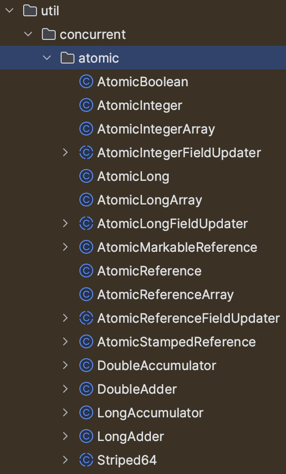
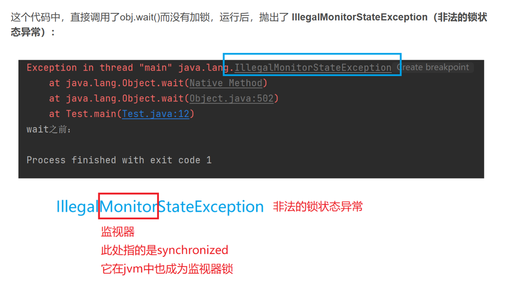

Java多线程：三、多线程锁、java锁的实现
前言
大部分内容由网上搜索，有直接复制粘贴的内容，本篇博客整理我查找的内容，且加入我个人的理解和个人需要了解的知识进行搜索得到的内容，有错误请在评论区留言
一、首先介绍一下锁
操作系统层面的锁： 操作系统通过锁机制来管理进程（或线程）对共享资源的访问，以防止数据竞争和保证数据一致性。 常见的操作系统锁包括互斥锁（Mutex）、读写锁（Read-Write Lock）、自旋锁（Spinlock）等，它们用于控制对临界区（Critical Section）的访问。
这里介绍一下“临界区”的概念。所谓“临界区”，指的是某一块代码区域，它同一时刻只能由一个线程执行。
Java多线程的锁： Java中的锁是Java编程语言中用于实现多线程同步和互斥的机制。 Java提供了多种类型的锁，如synchronized关键字、ReentrantLock类、ReadWriteLock等，用于控制多线程对共享资源的并发访问。
首先需要明确的一点是：Java 多线程的锁都是基于对象的，Java 中的每一个对象都可以作为一个锁。在上一节最后一点讲synchronized的时候有提到，synchronized可以修饰静态方法和实例方法，synchronized在这里其实就是加上了一个类锁。
Class 对象是一种特殊的 Java 对象，代表了程序中的类和接口。Java 中的每个类型（包括类、接口、数组以及基础类型）在 JVM 中都有一个唯一的 Class 对象与之对应。这个 Class 对象被创建的时机是在 JVM 加载类时，由 JVM 自动完成。
Class 对象中包含了与类相关的很多信息，如类的名称、类的父类、类实现的接口、类的构造方法、类的方法、类的字段等等。这些信息通常被称为元数据（metadata）。
可以通过 Class 对象来获取类的元数据，甚至动态地创建类的实例、调用类的方法、访问类的字段等。这就是Java 的反射（Reflection）机制
所以我们常说的类锁，其实就是 Class 对象的锁。
多线程锁的类型
Java中常用的多线程锁类型有以下几种:
- synchronized关键字
- ReentrantLock类
- ReadWriteLock接口
- StampedLock类
- Atomic类
这几个我会在第三大节里面介绍，首先先看基本锁的类型
二、锁的分类
直接上一个图

1、乐观锁 VS 悲观锁
八股：乐观锁 VS 悲观锁
乐观锁与悲观锁是一种广义上的概念，体现了看待线程同步的不同角度。
先说概念。对于同一个数据的并发操作，悲观锁认为自己在使用数据的时候一定有别的线程来修改数据，因此在获取数据的时候会先加锁，确保数据不会被别的线程修改。Java 中，synchronized 关键字 是最典型的悲观锁。
而乐观锁认为自己在使用数据时不会有别的线程修改数据，所以不会加锁，只是在更新数据的时候会去判断之前有没有别的线程更新了这个数据。如果这个数据没有被更新，当前线程将自己修改的数据写入。如果数据已经被其他线程更新，则根据不同的实现方式执行不同的操作（例如报错或者自动重试）。
乐观锁在 Java 中是通过无锁编程来实现的，最常采用的是CAS 算法，Java 原子类的递增操作就通过 CAS 自旋实现的。

根据上面的概念描述我们可以发现：
- 悲观锁适合写操作多的场景，先加锁可以保证写操作时数据正确。
- 乐观锁适合读操作多的场景，不加锁的特点能够使其读操作的性能大幅提升。
八股：CAS算法
在2.1中提到，乐观锁采用的是无锁编程，底层有采用CAS算法，那么什么是CAS算法？
CAS（Compare-and-Swap）是一种乐观锁的实现方式，全称为“比较并交换”，是一种无锁的原子操作。
在并发编程中，我们都知道i++操作是非线程安全的，这是因为 i++操作不是原子操作，这个在volatile关键字里讲过，可以去翻一下
在 CAS 中，有这样三个值：
- V：要更新的变量(var)
- E：预期值(expected)
- N：新值(new)
比较并交换的过程如下：
判断 V 是否等于 E，如果等于，将 V 的值设置为 N；如果不等，说明已经有其它线程更新了 V，于是当前线程放弃更新，什么都不做。
这里的预期值 E 本质上指的是“旧值”。
我们以一个简单的例子来解释这个过程：
- 如果有一个多个线程共享的变量
i原本等于 5，我现在在线程 A 中，想把它设置为新的值 6; - 我们使用 CAS 来做这个事情；
- 首先我们用 i 去与 5 对比，发现它等于 5，说明没有被其它线程改过，那我就把它设置为新的值 6，此次 CAS 成功，
i的值被设置成了 6； - 如果不等于 5，说明
i被其它线程改过了（比如现在i的值为 2），那么我就什么也不做，此次 CAS 失败，i的值仍然为 2。
在这个例子中，i就是 V，5 就是 E，6 就是 N。
那有没有可能我在判断了i为 5 之后，正准备更新它的新值的时候，被其它线程更改了i的值呢？
不会的。因为 CAS 是一种原子操作，它是一种系统原语，是一条 CPU 的原子指令，从 CPU 层面已经保证它的原子性。
当多个线程同时使用 CAS 操作一个变量时，只有一个会胜出，并成功更新，其余均会失败，但失败的线程并不会被挂起，仅是被告知失败，并且允许再次尝试，当然也允许失败的线程放弃操作。
了解：CAS算法如何实现原子操作？
（1）实现原理
java底层实现CAS操作是使用native关键字调用c++的接口
在 Java 中，有一个Unsafe类（下文介绍什么是unsafe类），它在sun.misc包中。它里面都是一些native方法（下文也会介绍什么是native方法），其中就有几个是关于 CAS 的：
1 | boolean compareAndSwapObject(Object o, long offset,Object expected, Object x); |
Unsafe 对 CAS 的实现是通过 C++ 实现的，它的具体实现和操作系统、CPU 都有关系。
Unsafe 是 Java 中一个非常特殊的类，它为 Java 提供了一种底层、”不安全”的机制来直接访问和操作内存、线程和对象。正如其名字所暗示的，Unsafe 提供了许多不安全的操作，因此它的使用应该非常小心，并限于那些确实需要使用这些底层操作的场景。我们在这里涉及到这个类基本上是需要native方法。
native方法，简单的说就是由 Java 调用非 Java 代码的接口，被调用的方法是由非 Java 语言实现的，例如它可以由 C 或 C++语言来实现，并编译成 DLL，然后直接供 Java 进行调用。native方法是通过 JNI（Java Native Interface）实现调用的，从 Java 1.1 开始 JNI 标准就是 Java 平台的一部分，它允许 Java 代码和其他语言的代码进行交互。
（2）实现原子操作
JDK 提供了一些用于原子操作的类，在java.util.concurrent.atomic包下面。在 JDK 8 中，有以下这些类：
这里就做部分了解，需要深入了解可自行搜相关内容

八股：CAS 的三大问题
尽管 CAS 提供了一种有效的同步手段，但也存在一些问题，主要有以下三个：ABA 问题、长时间自旋、多个共享变量的原子操作。
（1）ABA 问题
所谓的 ABA 问题，就是一个值原来是 A，变成了 B，又变回了 A。而当前线程在CAS操作中错误地认为该变量没有被其他线程修改过，从而可能导致数据不一致或错误。这个时候使用 CAS 是检查不出变化的，但实际上却被更新了两次。
ABA 问题的解决思路是在变量前面追加上版本号或者时间戳。从 JDK 1.5 开始，JDK 的 atomic 包里提供了一个类AtomicStampedReference类来解决 ABA 问题。
这个类的compareAndSet方法的作用是首先检查当前引用是否等于预期引用，并且检查当前标志是否等于预期标志，如果二者都相等，才使用 CAS 设置为新的值和标志。
1 | public boolean compareAndSet(V expectedReference, |
先来看参数：
- expectedReference：预期引用，也就是你认为原本应该在那个位置的引用。
- newReference：新引用，如果预期引用正确，将被设置到该位置的新引用。
- expectedStamp：预期标记，这是你认为原本应该在那个位置的标记。
- newStamp：新标记，如果预期标记正确，将被设置到该位置的新标记。
执行流程：
①、Pair<V> current = pair; 这行代码获取当前的 pair 对象，其中包含了引用和标记。
②、接下来的 return 语句做了几个检查：
expectedReference == current.reference && expectedStamp == current.stamp：首先检查当前的引用和标记是否和预期的引用和标记相同。如果二者中有任何一个不同，这个方法就会返回 false。- 如果上述检查通过，也就是说当前的引用和标记与预期的相同，那么接下来就会检查新的引用和标记是否也与当前的相同。如果相同，那么实际上没有必要做任何改变，这个方法就会返回 true。
- 如果新的引用或者标记与当前的不同，那么就会调用 casPair 方法来尝试更新 pair 对象。casPair 方法会尝试用 newReference 和 newStamp 创建的新的 Pair 对象替换当前的 pair 对象。如果替换成功，casPair 方法会返回 true；如果替换失败（也就是说在尝试替换的过程中，pair 对象已经被其他线程改变了），casPair 方法会返回 false。
（2）长时间自旋
CAS 多与自旋结合。如果自旋 CAS 长时间不成功，会占用大量的 CPU 资源（存在一直自旋到最大次数后停止的情况，但是占用很多cpu资源）。
解决思路是让 JVM 支持处理器提供的pause 指令（还有其他的，可以再去搜一些内容）。
pause 指令能让自旋失败时 cpu 睡眠一小段时间再继续自旋，从而使得读操作的频率降低很多，为解决内存顺序冲突而导致的 CPU 流水线重排的代价也会小很多。
（3）多个共享变量的原子操作
当对一个共享变量执行操作时，CAS 能够保证该变量的原子性。但是对于多个共享变量，CAS 就无法保证操作的原子性，这时通常有两种做法：
- 使用
AtomicReference类保证对象之间的原子性，把多个变量放到一个对象里面进行 CAS 操作； - 使用锁。锁内的临界区代码可以保证只有当前线程能操作。
2、自旋锁 VS 自适应自旋锁
自旋锁
先了解一下临界资源：
临界资源指的是多个进程/线程共同访问的某类资源，如打印机、数据表格或变量等。由于这些资源同时只能被一个进程/线程安全地使用，因此在并发编程中需要对它们的访问进行控制，以避免数据不一致或竞态条件的发生。
突发提问，临界区是什么？不记得了看第一节介绍锁的地方吧
自旋锁（Spinlock）是一种对临界资源进行互斥访问的手段，自旋锁的定义和工作原理如下：
定义：
自旋锁是一种锁机制，当一个线程尝试去获取某一把锁的时候，如果这个锁已经被另外一个线程占有了，那么此线程就无法获取这把锁，该线程会等待，间隔一段时间后再次尝试获取。这种采用循环加锁，等待锁释放的机制就称为自旋锁。
工作原理：
- 等待与重试：当线程发现锁被占用时，不是进入睡眠或阻塞状态，而是采用忙等待（busy waiting）的方式，即不断循环检查锁的状态，直到锁被释放。
- 原子操作：在自旋锁的实现中，对锁状态的检查和修改必须是原子操作，以避免竞态条件。
自旋锁通过等待和不断重试的操作，避免了线程的cpu来回切换，减少开销。仔细一想，如果锁里面的代码一下子就执行完成，甚至比切换线程，切换CPU的状态还要快，不使用自旋锁是不是有点得不偿失了呢？

自旋锁本身是有缺点的，它不能代替阻塞。自旋等待虽然避免了线程切换的开销，但它要占用处理器时间。如果锁被占用的时间很短，自旋等待的效果就会非常好。反之，如果锁被占用的时间很长，那么自旋的线程只会白白浪费处理器资源。所以，自旋等待的时间必须要有一定的限度，如果自旋超过了限定次数（默认是 10 次，可以使用-XX:PreBlockSpin 来更改）没有成功获得锁，就应当挂起线程。
自旋锁的实现原理同样也是 CAS，AtomicInteger 中调用 unsafe 进行自增操作的源码中的 do-while 循环就是一个自旋操作，如果修改数值失败则通过循环来执行自旋，直至修改成功。

自适应自旋锁
自适应意味着自旋的时间（次数）不再固定，而是由前一次在同一个锁上的自旋时间及锁的拥有者的状态来决定。如果在同一个锁对象上，自旋刚刚成功获得过锁，并且持有锁的线程正在运行中，那么虚拟机就会认为这次自旋也是很有可能再次成功的，进而它将允许自旋等待更长的时间。如果对于某个锁，自旋很少成功获得过，那在以后尝试获取这个锁时将可能省略掉自旋过程，直接阻塞线程，避免浪费处理器资源。
3、无锁、偏向锁、轻量级锁、重量级锁
这四种锁是专门针对 synchronized 的，我们在第三大节：JUC包下的锁中去介绍。
4、可重入锁 VS 不可重入锁
可重入锁又名递归锁，是指同一个线程在外层方法获取锁的时候，再进入该线程的内层方法会自动获取锁（前提：锁的是同一个对象或者 class），不会因为之前已经获取过还没释放而阻塞。Java 中ReentrantLock和synchronized都是可重入锁，可重入锁的一个优点就是可以一定程度避免死锁。
为什么可重入锁就可以在嵌套调用时自动获得锁呢？
（1）实现机制
可重入锁的实现通常依赖于以下几个关键点：
- 锁计数器（Lock Counter）
- 每个锁对象都维护一个计数器，用于记录该锁被当前线程持有的次数。
- 当线程首次获取锁时，计数器被初始化为1。
- 如果线程在持有锁的情况下再次尝试获取同一个锁，计数器将递增。
- 锁的持有者（Lock Owner）
- 锁对象还记录着当前持有该锁的线程。
- 只有锁的当前持有者线程才能增加锁的计数器（即重复获取锁）。
- 锁释放（Lock Release）
- 当线程退出被锁保护的代码区域时，它会释放锁。
- 释放锁时，锁的计数器会递减。
- 如果计数器减至0，则表示当前线程已经完全释放了锁，其他线程可以尝试获取该锁。
（2）嵌套调用的自动加锁
之前我们说过 ReentrantLock 和 synchronized 都是重入锁，那么我们通过重入锁 ReentrantLock 以及非可重入锁 NonReentrantLock 的源码来对比分析一下为什么非可重入锁在重复调用同步资源时会出现死锁。
首先ReentrantLock和 NonReentrantLock 都继承了父类AQS（第三大节），其父类 AQS 中维护了一个同步状态 status 来计数重入次数，status 初始值为 0。
当线程在持有可重入锁的情况下进入嵌套调用（即一个被锁保护的方法或代码块内部调用了另一个被相同锁保护的方法或代码块）时，由于当前线程已经是锁的持有者，因此它可以自动增加锁的计数器，而无需等待锁的释放。这样，线程就可以无缝地进入内层被锁保护的区域，而不会导致死锁或阻塞。
非可重入锁则是在确定当前线程是持有锁的线程之后，直接将 status 置为 0，将锁释放。

5、公平锁和非公平锁
这里的“公平”，其实通俗意义来说就是“先来后到”，也就是 FIFO。如果对一个锁来说，先对锁获取请求的线程一定会先被满足，后对锁获取请求的线程后被满足，那这个锁就是公平的。反之，那就是不公平的。
一般情况下，非公平锁能提升一定的效率。但是非公平锁可能会发生线程饥饿（有一些线程长时间得不到锁）的情况。所以要根据实际的需求来选择非公平锁和公平锁。
ReentrantLock 支持非公平锁和公平锁两种。
6、读写锁和排它锁
synchronized和ReentrantLock，其实都是“排它锁”。也就是说，这些锁在同一时刻只允许一个线程进行访问。
而读写锁可以在同一时刻允许多个读线程访问。Java 提供了 ReentrantReadWriteLock类作为读写锁的默认实现，内部维护了两个锁：一个读锁，一个写锁。通过分离读锁和写锁，使得在“读多写少”的环境下，大大地提高了性能。
（1）介绍一下ReentrantReadWriteLock：
ReentrantReadWriteLock：是Java中的一个读写锁实现，它允许多个线程同时读取共享资源（读读可以并发），但在写入时只允许一个线程独占（读写、写读、写写互斥）。这个锁支持重入，即同一个线程可以多次获取相同类型的锁。它提高了读操作的并发性，同时保证了写操作的独占性。
我相信没学过ReentrantReadWriteLock的人肯定认为和ReentrantLock有什么关系。
实际上什么关系都没有，ReentrantReadWriteLock和ReentrantLock之间并没有继承关系。它们各自独立实现，服务于不同的锁需求。ReentrantReadWriteLock实现了ReadWriteLock接口。这个接口提供了两个锁对象：读锁（ReadLock）和写锁（WriteLock），分别通过readLock()和writeLock()方法获取。
好了到这里，又有人想，ReentrantReadWriteLock实现了ReadWriteLock接口，而ReentrantLock实现了Lock接口，那么ReadWriteLock接口和Lock接口是不是继承关系？实际上也不是，都是JUC包下独立的接口。
（2）回归正题：
排它锁也叫独享锁，如果线程 T 对数据 A 加上排它锁后，则其他线程不能再对 A 加任何类型的锁。获得排它锁的线程既能读数据又能修改数据。
与之对应的，就是共享锁，指该锁可被多个线程所持有。如果线程 T 对数据 A 加上共享锁后，则其他线程只能对 A 再加共享锁，不能加排它锁。获得共享锁的线程只能读数据，不能修改数据。
独享锁与共享锁也是通过AQS（第三大节介绍）来实现的，通过实现不同的方法，来实现独享或者共享。
下图为 ReentrantReadWriteLock 的部分源码：

我们看到ReentrantReadWriteLock有两把锁：ReadLock 和 WriteLock，由词知意，一个读锁一个写锁，合称“读写锁”。再进一步观察可以发现 ReadLock 和 WriteLock 是靠内部类 Sync 实现的锁。Sync 是 AQS（第三大节介绍） 的一个子类。
在 ReentrantReadWriteLock 里面，读锁和写锁的锁主体都是 Sync，但读锁和写锁的加锁方式不一样。读锁是共享锁，写锁是独享锁。读锁的共享锁可保证并发读非常高效，而读写、写读、写写的过程互斥，因为读锁和写锁是分离的。所以 ReentrantReadWriteLock 的并发性相比一般的互斥锁有了很大提升。
那读锁和写锁的具体加锁方式有什么区别呢？
AQS中的存储status字段，该字段用来描述有多少线程持有锁。
在独享锁中，这个值通常是 0 或者 1（如果是重入锁的话 state 值就是重入的次数），在共享锁中 state 就是持有锁的数量。但是ReentrantReadWriteLock 中有读、写两把锁，所以需要在一个整型变量 state 上分别描述读锁和写锁的数量（或者也可以叫状态）。
关于深入去探究status字段的切割等底层原理就不写了，可以自行参考，我相信你准备面试也看不完这个
三、JUC包下的锁
1、抽象类AQS/AQLS/AOS
什么是AQS？
重要的事情说三遍
AQS的全称为（AbstractQueuedSynchronizer）抽象的队列式的同步器，是并发编程中实现同步器的一个框架，用来存储同步状态（State）和线程队列（CLH队列的变体）。
AQS的全称为（AbstractQueuedSynchronizer）抽象的队列式的同步器，是并发编程中实现同步器的一个框架，用来存储同步状态（State）和线程队列（CLH队列的变体）。
AQS的全称为（AbstractQueuedSynchronizer）抽象的队列式的同步器，是并发编程中实现同步器的一个框架，用来存储同步状态（State）和线程队列（CLH队列的变体）。
我们需要特别记住同步状态（State）和线程队列（CLH队列的变体）。
字面意思理解：
是一个抽象类，也就是它定义了一些基础功能，会有很多子类去扩展他的功能。
是一个队列式的，也就是会用来协调多个线程的。
是一个同步器，那么是用来给多个线程同步某个数据或者某个状态的。
AQS 是一个用来构建锁和同步器的框架，使用 AQS 能简单且高效地构造出应用广泛的同步器，比如 ReentrantLock、ReentrantReadWriteLock等等，都是基于 AQS 的。
AQS 里面的“资源”是用一个int类型的数据来表示的，有时候业务需求的资源数超出了int的范围，所以在 JDK 1.6 中，多了一个AQLS（AbstractQueuedLongSynchronizer）。它的代码跟 AQS 几乎一样，只是把资源的类型变成了long类型。AQS 和 AQLS 都继承了一个类叫AOS（AbstractOwnableSynchronizer）。这个类也是在 JDK 1.6 中出现的。
数据结构
数据结构有两个，同步状态status和节点node
同步状态status
AQS 内部使用了一个volatile的变量 state 来作为资源的标识。
1 | /** |
同时定义了几个获取和改变 state 的 protected 方法，子类可以覆盖这些方法来实现自己的逻辑：
1 | getState() |
这三种操作均是原子操作，其中 compareAndSetState 的实现依赖于 Unsafe类 的 compareAndSwapInt() 方法。
1 | /** |
Node节点
AQS 内部使用了一个先进先出（FIFO）的双端队列，并使用了两个引用 head 和 tail 用于标识队列的头部和尾部。
但它并不直接储存线程，而是储存拥有线程的 Node 节点。
1 | static final class Node { |
通过 Node 我们可以实现两种队列：
1）一是通过 prev 和 next 实现 CLH（Craig, Landin, and Hagersten）队列（线程同步队列、双向队列）。
在 CLH 锁中，每个等待的线程都会有一个关联的 Node，每个 Node 有一个 prev 和 next 指针。当一个线程尝试获取锁并失败时，它会将自己添加到队列的尾部并自旋，等待前一个节点的线程释放锁。类似下面这样。
1 | public class CLHLock { |
2）二是通过 nextWaiter 实现 Condition上的等待线程队列（单向队列），这个 Condition 主要用在 ReentrantLock类中。
2、接口 Condition/Lock/ReadWriteLock
locks 包下共有三个接口：Condition、Lock、ReadWriteLock。
其中，Lock 和 ReadWriteLock 从名字就可以看得出来，分别是锁和读写锁的意思。Lock 接口里面有一些获取锁和释放锁的方法声明，而 ReadWriteLock 里面只有两个方法，分别返回“读锁”和“写锁”：
1 | public interface ReadWriteLock { |
Lock 接口中有一个方法可以获得一个Condition：
1 | Condition newCondition(); |
之前我们提到过每个对象都可以用Object的wait/notify方法来实现等待/通知机制。而 Condition 接口也提供了类似 Object 的方法，可以配合Lock来实现等待/通知模式。使用Condition监视器的理由可以认为线程等待队列可以是多个，而object只能是一个。
3、ReentrantLock类
ReentrantLock 是 Lock 接口的默认实现，实现了锁的基本功能。
从名字上看，它是一个“可重入”锁，从源码上看，它内部有一个抽象类Sync，继承了 AQS，自己实现了一个同步器。
同时，ReentrantLock 内部有两个非抽象类NonfairSync和FairSync，它们都继承了 Sync。从名字上可以看得出，分别是”非公平同步器“和”公平同步器“的意思。这意味着 ReentrantLock 可以支持”公平锁“和”非公平锁“。
通过看这两个同步器的源码可以发现，它们的实现都是”独占“的。都调用了 AOS 的setExclusiveOwnerThread方法，所以 ReentrantLock 的锁是”独占“的，也就是说，它的锁都是”排他锁“，不能共享。
在 ReentrantLock 的构造方法里，可以传入一个boolean类型的参数，来指定它是否是一个公平锁，默认情况下是非公平的。这个参数一旦实例化后就不能修改，只能通过isFair()方法来查看。
根据第二大节中的内容，ReentrantLock 是可重入锁、公平锁和非公平锁、排它锁。
4、synchronized关键字
在Java中，synchronized 关键字用于控制多个线程对共享资源的访问，其底层实现涉及多种锁状态，这些状态根据竞争情况逐步升级，以提高锁的获取与释放效率。我查到的资料说，在jdk1.6之前所有锁都是操作系统提供的重量级锁，后续对synchronized进行优化，直到现在出现了四个锁状态，由低到高（即锁的要求越来越高）分别是无锁状态、偏向锁、轻量级锁状态、重量级锁状态。
（1）无锁状态
定义：
无锁状态是指没有对资源进行锁定，所有的线程都能访问并尝试修改同一个资源，但同时只有一个线程能修改成功。无锁的特点是修改操作会在循环内进行，线程会不断地尝试修改共享资源。如果没有冲突就修改成功并退出，否则就会继续循环尝试。
特点：
- 无需使用锁机制，适用于线程冲突较少的场景。
- 线程通过自旋（CAS）来尝试访问资源，直至成功。
（2）偏向锁状态
定义：
偏向锁是指当一段同步代码一直被同一个线程所访问时，即不存在多个线程的竞争时，那么该线程在后续访问时便会自动获得锁，从而降低获取锁带来的消耗，即提高性能。
特点：
- 偏向锁的目标是减少无竞争且只有一个线程使用锁的情况下的性能消耗。
- JVM使用CAS操作把线程ID记录到对象的Mark Word（等下介绍）当中，并修改标识位，当前线程就拥有了这把锁。
- 偏向锁只有遇到其他线程尝试竞争偏向锁时，持有偏向锁的线程才会释放锁。
（3）轻量级锁状态
定义：
轻量级锁是指当锁是偏向锁的时候，却被另外的线程所访问，此时偏向锁就会升级为轻量级锁。其他线程会通过自旋的形式尝试获取锁，线程不会阻塞，从而提高性能。
特点：
- 轻量级锁是介于偏向锁和重量级锁之间的锁实现。
- 通过CAS操作尝试将对象的Mark Word更新为指向Lock Record的指针，如果成功，则线程拥有锁。
- 适用于线程竞争不激烈且同步块执行时间较短的场景。
- 如果多个线程竞争锁，轻量级锁可能会升级为重量级锁。
（4）重量级锁状态
定义：
重量级锁是指当多个线程竞争同一个锁时，锁的状态会升级为重量级锁。此时，除了锁的拥有者外，其余线程都会处于阻塞状态。
特点：
- 重量级锁通过对象内部的监视器锁（monitor）实现，依赖于操作系统的Mutex Lock。
- 线程阻塞和唤醒的开销较大，适用于线程竞争激烈的场景。
- 当轻量级锁的自旋次数达到一定阈值时，如果仍未获得锁，则会升级为重量级锁。
引发问题
好，现在看到这里大部分的无锁偏、向锁、轻量级锁、重量级锁内容就可以解释清楚了，但是博客写到这里的时候，我就在思考，synchronized的锁底层并没有使用AQS这样的抽象队列同步器，为什么synchronized可以实现可重入锁，排它锁的功能？
首先我们需要了解，java中的锁存放在哪里，上面的提到的Mark Word是什么？
Java锁的位置、什么是Mark Word？
首先我们来看看一个对象的“锁”是存放在什么地方的。
每个 Java 对象都有一个对象头。如果是非数组类型，则用 2 个字宽来存储对象头，如果是数组，则会用 3 个字宽来存储对象头。在 32 位处理器中，一个字宽是 32 位；在 64 位虚拟机中，一个字宽是 64 位。对象头的内容如下表所示：
| 长度 | 内容 | 说明 |
|---|---|---|
| 32/64bit | Mark Word | 存储对象的 hashCode 或锁信息等 |
| 32/64bit | Class Metadata Address | 存储到对象类型数据的指针 |
| 32/64bit | Array length | 数组的长度（如果是数组） |
我们主要来看看 Mark Word 的格式：
| 锁状态 | 29 bit 或 61 bit | 1 bit 是否是偏向锁？ | 2 bit 锁标志位 |
|---|---|---|---|
| 无锁 | 0 | 01 | |
| 偏向锁 | 线程 ID | 1 | 01 |
| 轻量级锁 | 指向栈中锁记录的指针 | 此时这一位不用于标识偏向锁 | 00 |
| 重量级锁 | 指向互斥量（重量级锁）的指针 | 此时这一位不用于标识偏向锁 | 10 |
| GC 标记 | 此时这一位不用于标识偏向锁 | 11 |
可以看到，当对象状态为偏向锁时，Mark Word存储的是偏向的线程 ID；当状态为轻量级锁时，Mark Word存储的是指向线程栈中Lock Record的指针；当状态为重量级锁时，Mark Word为指向堆中的 monitor（监视器）对象的指针。
在 Java 中，监视器（monitor）是一种同步工具，用于保护共享数据，避免多线程并发访问导致数据不一致。在 Java 中，每个对象都有一个内置的监视器。
监视器包括两个重要部分，一个是锁，一个是等待/通知机制，后者是通过 Object 类中的wait(), notify(), notifyAll()等方法实现的。
我在下文会提到 Object 类中的
wait(),notify(),notifyAll()等方法，可以看下我学习多线程碰到的问题。
好了，现在可以回答为什么synchronized可以实现可重入锁，排它锁的功能？
可重入锁的实现
synchronized是可重入锁，这意味着同一个线程可以多次获取同一个对象锁，而不会导致死锁。synchronized实现可重入锁的机制主要依赖于对象头中的锁计数器（或称为锁记录器、锁状态等，具体实现可能因JVM版本和平台而异）：
根据我查到的资料，锁计数器是一个抽象的概念，在对象头中并非是以一个单独的字段出现，而是在Mark Word中以锁信息的方式存储在内，并且这些信息具体实现可能因JVM版本和平台而异。
- 锁计数器：每个对象都有一个与之关联的锁计数器，用于记录当前持有该对象锁的线程重入的次数。
- 加锁：当一个线程首次获取锁时，JVM会将锁计数器的值设置为1，并将锁的持有者设置为当前线程。如果同一个线程再次尝试获取该锁，锁计数器会递增，而不是阻塞线程。
- 解锁：当线程退出同步代码块时，锁计数器会递减。只有当锁计数器的值减为0时，锁才会被完全释放，此时其他线程才能获取该锁。
通过这种机制，synchronized确保了同一个线程可以多次进入同步代码块而不会导致死锁，同时也保证了在锁被完全释放之前，其他线程无法进入该同步代码块。
排他锁的实现
synchronized实现的锁本质上是排他锁（互斥锁），即在同一时刻，只有一个线程能够持有锁并访问被保护的资源。这是通过JVM的监视器锁（monitor lock）机制实现的：
- 监视器锁：每个Java对象都可以关联一个监视器锁（monitor）。当线程进入同步代码块时，它会尝试获取与同步代码块对象相关联的监视器锁。
- 加锁与解锁：如果监视器锁未被其他线程持有，则当前线程将获取锁并继续执行同步代码块。如果锁已被其他线程持有，则当前线程将被阻塞，直到锁被释放。线程退出同步代码块时，会释放锁，允许其他线程获取锁并执行同步代码块。
讲一个我学习多线程时碰到的问题
这个问题是关于重量级锁的内容。当时我学习Object类的wait方法、notify方法（包括notifyAll，下文可能会省略）这些关于线程的方法的时候，我没有使用synchronized关键字包裹代码，类似的结构像这样：
1 | public class Test { |
我相信大家学习的时候一定学到了Object类的wait方法、notify方法是为了让线程中出让锁，或是唤醒等待状态下的线程，但是前提条件都是加了锁，否则哪里来的出让锁和抢夺cpu一说？
我们再把这三个方法说得细致一些：当一个线程调用了一个对象的 wait() 方法时，它会释放该对象的监视器锁，并进入该对象的等待集合中等待。直到其他线程调用了该对象的 notify() 或 notifyAll() 方法，并且当前线程重新获得了该对象的监视器锁之后，它才会从 wait() 方法返回，并继续执行。这也就是重量级锁中我们说到的内容。
由于 notify() 和 notifyAll() 是用来唤醒等待在该对象监视器上的线程的，因此它们必须在持有该对象监视器锁的同步代码块或同步方法中调用。否则，编译器会报错，因为如果没有持有监视器锁，那么线程就没有权限调用这些方法。

如果还没有获取到锁就尝试解锁，运行后就会抛出非法的锁状态异常。这里的代码抛出该异常正是这个原因：wait方法内部有一步重要的操作：先解锁，再阻塞等待。
因此，在使用wait方法 前，必须先加锁，把wait方法写到synchronized代码块内部。 同时，Java也规定调用notify方法也必须在synchronized代码块中。
并且，加锁的锁对象必须要与调用wait方法的锁对象是同一个。如果加锁对象与调用wait方法的对象不是同一个，也会抛出IllgalMonitorStateException 异常。
5、ReentrantReadWriteLock
ReentrantReadWriteLock是 ReadWriteLock 接口的默认实现。它与 ReentrantLock 的功能类似，同样是可重入的，支持非公平锁和公平锁。不同的是，它还支持”读写锁“。
在这里只介绍内部结构，可重入锁、非公平锁和公平锁看第二大节
ReentrantReadWriteLock 内部的结构大概是这样：
1 | // 内部结构 |
可以看到，它同样是内部维护了两个同步器。且维护了两个 Lock 的实现类 ReadLock 和 WriteLock。从源码可以发现，这两个内部类用的是外部类的同步器。
6、拓展：StampedLock
在第一大节的结尾，有提到这个锁，对于普通学习多线程的同学来说我认为见的都很少，但是我看的博客有介绍这个锁的性能，所以我也就简单的说说~
StampedLock 类是 Java 8 才发布的，也是 Doug Lea 大神所写，有人称它为锁的性能之王。
StampedLock 没有实现 Lock 接口和 ReadWriteLock 接口，但它实现了“读写锁”的功能，并且性能比 ReentrantReadWriteLock 更高。StampedLock 还把读锁分为了“乐观读锁”和“悲观读锁”两种。
感兴趣可以自行搜索，在这里的博客就只介绍面向八股的比较常见的锁啦